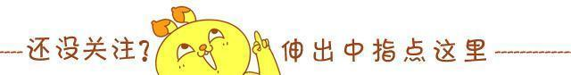
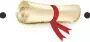

使用小程序


静守一份安然，淡墨红尘，默然相爱，寂静喜欢
人最好的状态是，脸上看起来比实际年龄年轻三五岁、心理比实际年龄成熟三五岁。而越是看起来极简单的人，越是内心极丰盛的人。内心空白，才要装出一脸世故。---苏芩有时候不小心知道了些事情后，会觉得很寒心。
不要拿自己的生活跟别人比，因为你无法了解别人的经历。没人能主宰你的幸福，除了你自己。
有生之年，只诉温暖不言殇，花味渐浓，茶味渐醇，倾心相遇，安暖相陪。
身体是固定资产，年龄是累积折旧，暗恋是收不回的呆账，思念是日记账，爱情是无形资产，缘分是营业外收入，结婚是合并报表，爱人是应付账款，眼泪是冲减所有者权益，疾病是维修费，回忆是财产分析，买衣服是包装费，旧情难忘是递延资产，孩子是其它应付款，生活是持续经营。
时光越老，人心越淡。轻轻的呼吸，浅浅的微笑。
我不嫌孤单，不嫌独自眠餐独自行，我只要这世间一点点温暖，用来搭救我渴望干净似琉璃的心。
人生三大遗憾：不会选择；不坚持选择；不断地选择。可以珍惜的未必可以拥有，可以拥有的未必可以长久，可以长久的又未必还能继续让自己想停留。假花比鲜花更永恒，镜花比真花更诱惑。只要喜欢，何必追究？人生最大的悲哀，莫过于执著。---西岭雪
一花凋零荒芜不了整个春天，一次挫折也荒废不了整个人生。
最美的你不是生如夏花，而是在时间的长河里，波澜不惊。
不要拿他为你对他的好的反馈来评定他好不好。有些人只是有教养，而不是爱你。有些人只是不知道表达，而不是不爱你。
我梦想中的生活就是这样：有花，有天空，有可以眺望期许的远方。
半生花开，半世花落。这山长水远的道路，终究是要自己走下去。
23岁无奈，惶恐；24岁无知，拼搏；25硬撑，独立；26感恩，现实；27接受，洒脱；28释怀，原则；29无畏，接纳；30当下，真诚；31岁信仰，专注。每个人在自己的年纪都会被贴一两个标签，也许你不喜欢，但别人偏偏这么评价你。其实随着成长你自然会改变，每个人经过这一轮，才会变成真正的自己。---刘同
时光永远不会逆行，把握好每一个属于自己的清晨。你身处什么样的圈子，你就会遇到什么样的人；你结交了那些朋友，你脾性也会慢慢接近这样的人；你处在什么位置，站在什么高度，决定了你是怎么样的视野；内心多大的格局，你就可以看到多大的天空。你没有碰到你期望的人，是因为你还没有准备好你自己。
生活是一场旅行，我们都是时间的过客。岁月改变了我们的容颜，一成不变的是脚下走过的风景。
静守一份安然，淡墨红尘，默然相爱，寂静喜欢。
有思想，